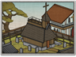

Requires
- Buildings: 
- Arts:

- Resources:

- Religions:

Enables
- Buildings:

Basic Building Statistics (can be modified by difficulty level, arts, skills, traits and retainers)
- Cost: 4000
- +2 happiness for the Christian population
- +5% to town growth from all buildings
- Spreads Christianity to neighbouring provinces (+5 religious zeal)
- Converts the populace to Christianity (+6 religious zeal)
- Enables recruitment of Rank 1 missionaries
Clan Effects
- Improves the rate at which chi arts are mastered: +15%
- Each Christian chain building enables you to sustain one additional missionary (to a maximum of 5)
Description
A church is not built with stones, but in men's hearts.
This fine structure allows the recruitment of missionaries, and aids the conversion of the province and its neighbours. It also, however, significantly increases the unease and unhappiness of the Buddhist population in the area. The building itself is a mark of how seriously a province's rulers take their Christian faith. Historically, there was little agreement between daimyos as to the best way to deal with Christians and Christianity. Some saw it as a way of increasing trade with the outside world and, of course, getting more European guns; others saw it as a different path to God; still others viewed the faith with hostility as being un-Japanese. In 1597 Toyotomi Hideyoshi made his position perfectly clear when he had 26 Japanese and European Catholics rounded up, tortured and publically crucified. This horrible fate had its intended effect: warning his people against the risks inherent in the new, foreign faith.